Video Presentation
Abstract
Monocular colonoscopic 3D reconstruction is important for surgical robotic colonoscopy, but remains challenging due to weak texture, specular reflections, limited view overlap, and non-rigid tissue motion. Conventional multi-view 3D reconstruction methods rely on stable correspondences and approximate rigidity, which are often violated in colonoscopy. Existing endoscopic methods often rely on domain-specific supervision, whereas there are not enough in-vivo labeled data available to adapt geometry foundation models to clinical colonoscopy. We present Colon3R, a cross-domain semi-supervised framework built on pretrained VGGT that transfers coupled camera, depth, and pointmap geometry from labeled phantom and simulated data to unlabeled in-vivo colonoscopy without requiring target-domain geometric annotations. Unlike source-only fine-tuning, which learns only from phantom and simulated data, Colon3R directly exploits unlabeled in-vivo video through teacher-derived cross-view supervision. Our proposed hierarchical quasi-rigid reliability selects reliable supervision at the sequence, directed-pair, and pixel levels, while source-preserving adaptation retains the learned coupled geometry during target-domain adaptation. Extensive experiments demonstrate that our method achieves superior overall performance over state-of-the-art approaches in depth, pointmap, and camera pose estimation. Qualitative comparisons on real in-vivo colonoscopy further show substantially more complete and geometrically consistent reconstructions than competing methods under clinical domain shift.
Overview
Colon3R adapts VGGT from labeled phantom and simulated data to unlabeled in-vivo colonoscopy. It selects cross-view supervision at sequence, directed-pair and pixel levels, while retaining source supervision and constraining target updates to preserve coupled camera, depth and pointmap geometry.
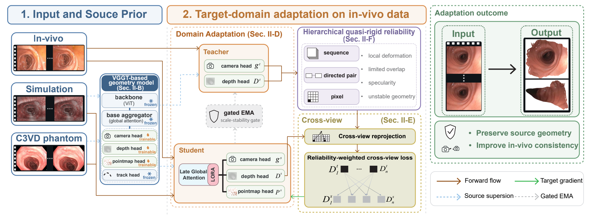
Quantitative Results
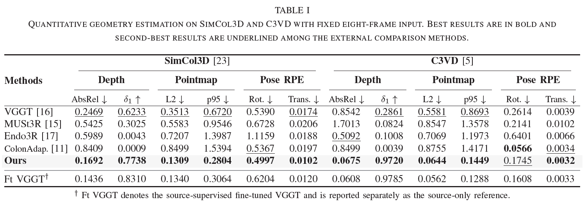
C3VD | Cecum - Reconstruction Error


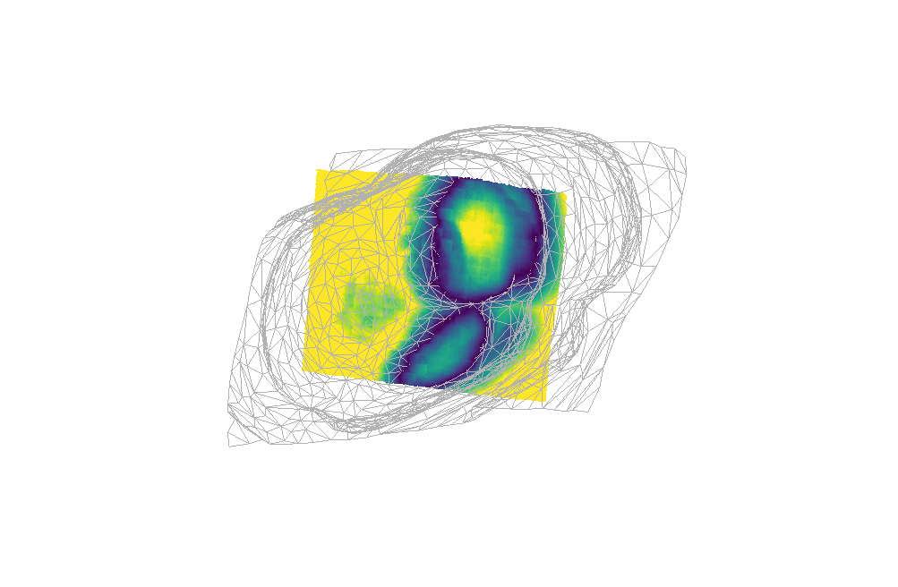
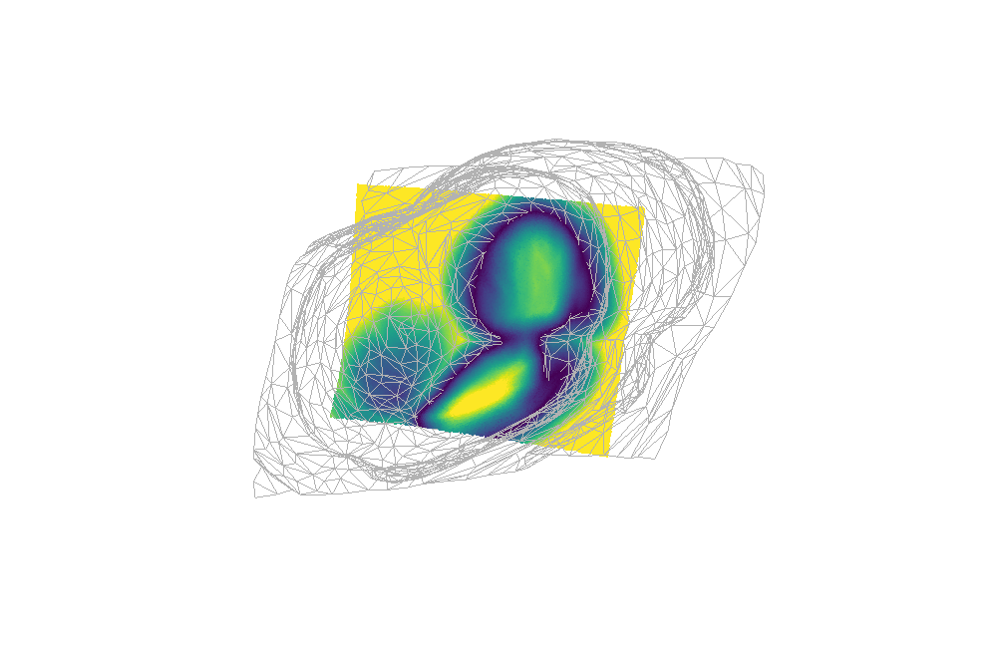
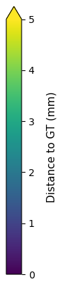
In-vivo | Segment 1 - Reconstruction Methods
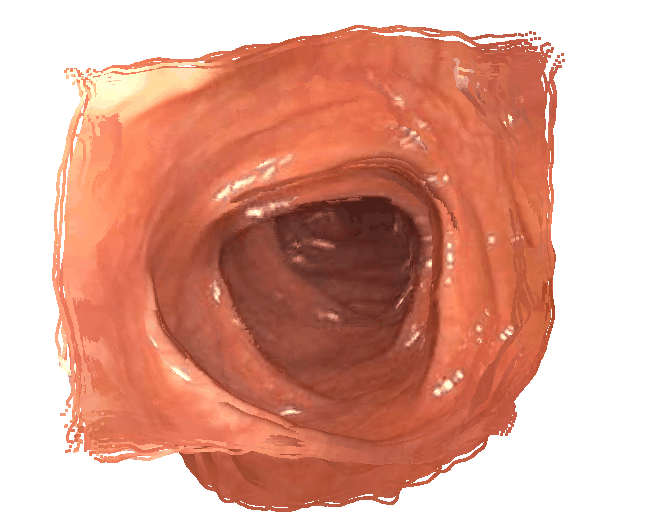
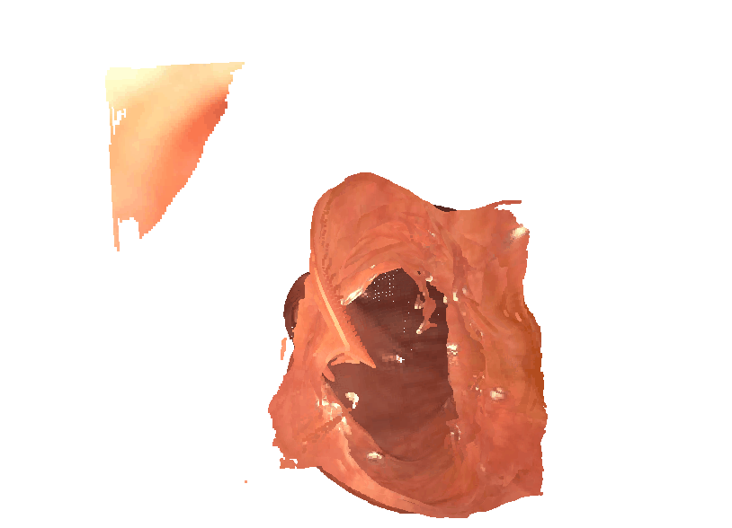

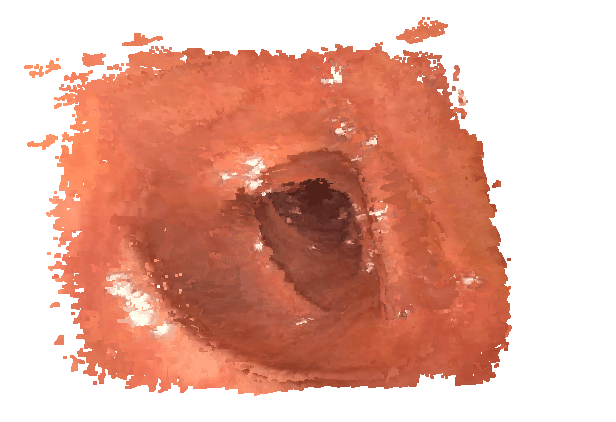
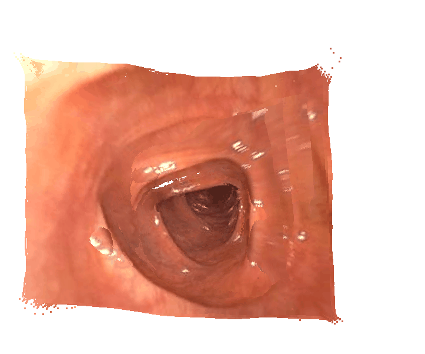
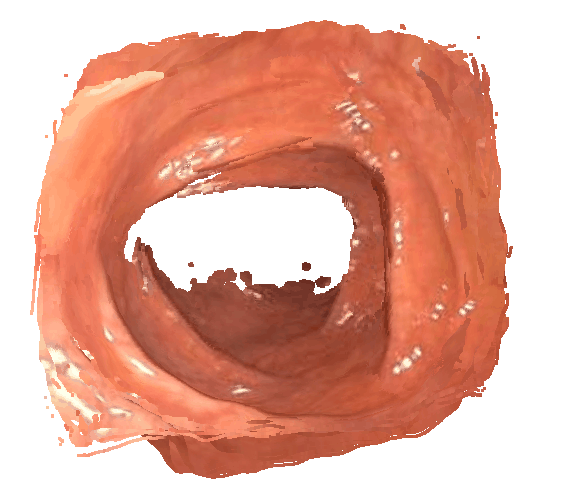
In-vivo | Segment 2 - Reconstruction Methods
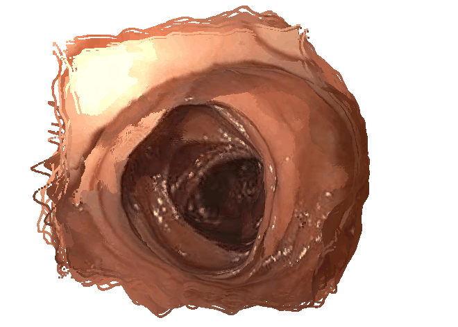

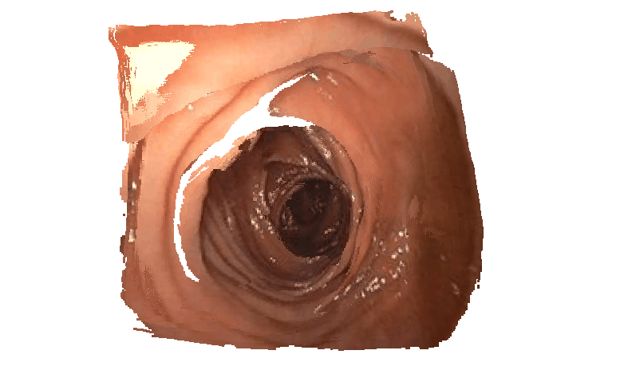
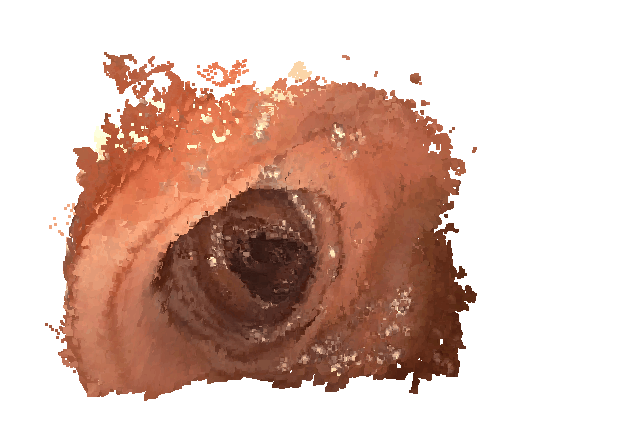
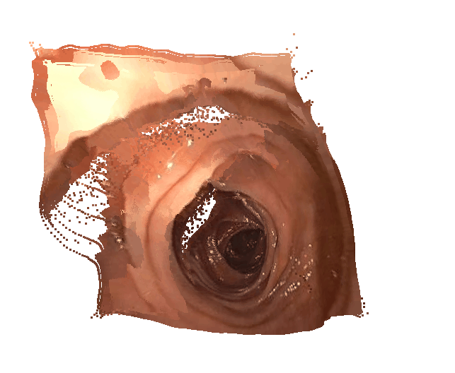
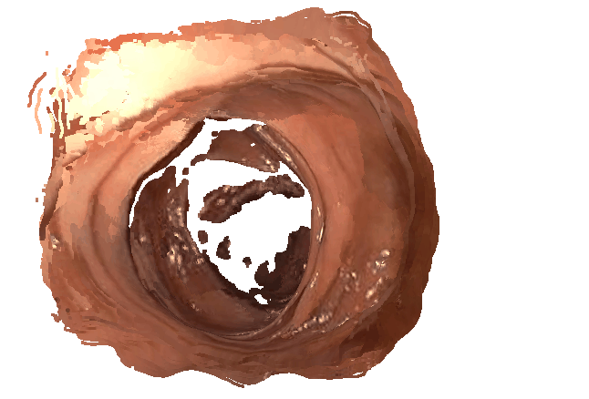
Citation
If you find this work useful, please cite:
@misc{xing2026colon3rcrossdomain3dreconstruction,
title={Colon3R: Cross-Domain 3D Reconstruction from Monocular Colonoscopic Video},
author={Zhihao Xing and Yingyu Wang and Liang Zhao and Shoudong Huang},
year={2026},
eprint={2609.23961},
archivePrefix={arXiv},
primaryClass={cs.CV},
url={https://arxiv.org/abs/2609.23961},
}